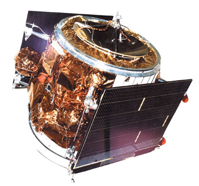

A satellite carried to its launch site on a bullock cart. A nation that couldn't afford a truck used what it had. And then put a geostationary communications satellite into orbit. This is the story of APPLE — India's most improbable space triumph.
Watch: APPLE Satellite StoryAPPLE — Ariane Passenger Payload Experiment — was India's first experimental geostationary communications satellite, launched on June 19, 1981, aboard ESA's Ariane-1 rocket from Kourou, French Guiana. It was the first Indian satellite to be placed in geostationary orbit — 36,000 km above Earth's equator — where it could serve as a fixed relay point for television and telecommunications signals across all of India.
APPLE was built entirely by ISRO scientists with no prior experience building a geostationary satellite. It was designed to test communication technologies that would form the backbone of India's future INSAT satellite series — the series that eventually brought television to India's villages.
The mission succeeded. APPLE operated for nearly two years, validating communication technologies and demonstrating that India could build and operate a geostationary satellite. The INSAT series that followed — and everything India's communication infrastructure is built on today — began with APPLE.
The image is burned into Indian space history: APPLE being transported to its test site at Thumba Equatorial Rocket Launching Station (TERLS) on a wooden cart pulled by bullocks — for two simultaneous engineering reasons. First, the cart's slow, smooth movement caused far less vibration than any motor vehicle. Second — and less known — the cart's wooden construction meant zero metallic electromagnetic interference, allowing engineers to precisely test and measure APPLE's antenna radiation patterns during transport without the distortion a metal truck body would have caused. The bullock cart was not poverty — it was the optimal test fixture.
The engineers reasoned that a bullock cart's slow, smooth movement would cause less vibration than any motor vehicle available. They were right. The satellite arrived intact. It launched successfully. It worked.
The photograph of APPLE on the bullock cart became the most famous image in Indian space history — a symbol of India's ability to solve problems with ingenuity rather than money. It was shared globally. It told the world that India reaches space not because it has resources, but because it has brains.
APPLE carried a C-band transponder with two channels — capable of relaying television signals, telecommunications, and radio communications across India from its geostationary position. The satellite tested station-keeping in geostationary orbit, attitude control using momentum wheels and thrusters, thermal management at GEO altitude, and ground-satellite communication protocols.
All of these technologies were directly transferred to the INSAT (Indian National Satellite) series that followed — INSAT-1A, 1B, 1C, 1D — which became the backbone of India's national communication infrastructure. Every satellite TV antenna in India, every doordarshan transmission to a remote village, every telephone call routed through satellite — traced back to what APPLE proved was possible.
APPLE's legacy is not just technical — it is cultural. The bullock cart photograph became India's most famous space image. It appeared in textbooks, documentaries, international presentations, and became a symbol of Indian jugaad engineering recognised globally.
More concretely: APPLE's technology directly seeded the INSAT programme. The INSAT series brought television, telephone connectivity, and weather data to India's most remote corners. Fishermen in Kerala, farmers in Rajasthan, and students in the northeast India all benefited — tracing a direct line back to the satellite that rode a bullock cart to its test.